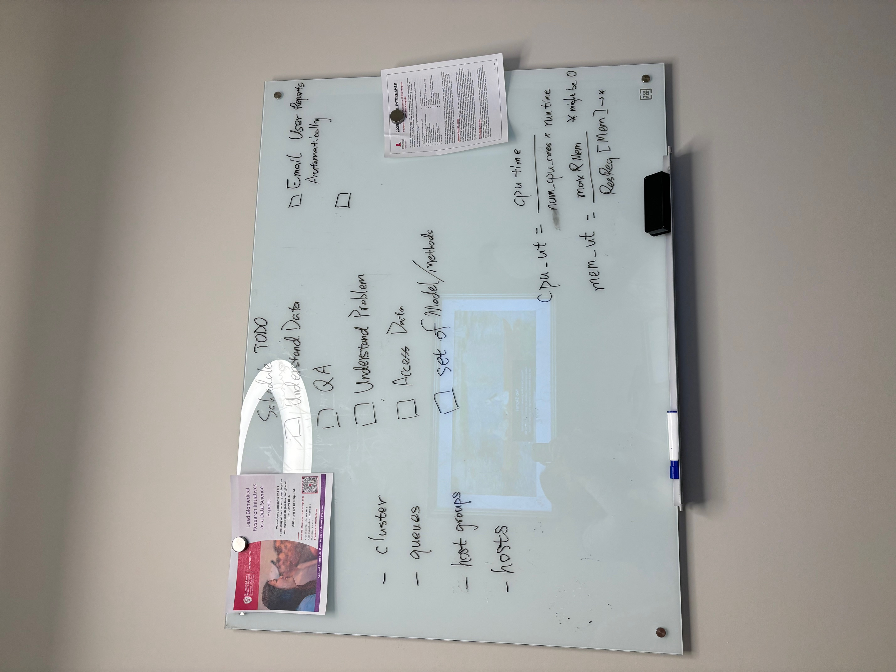
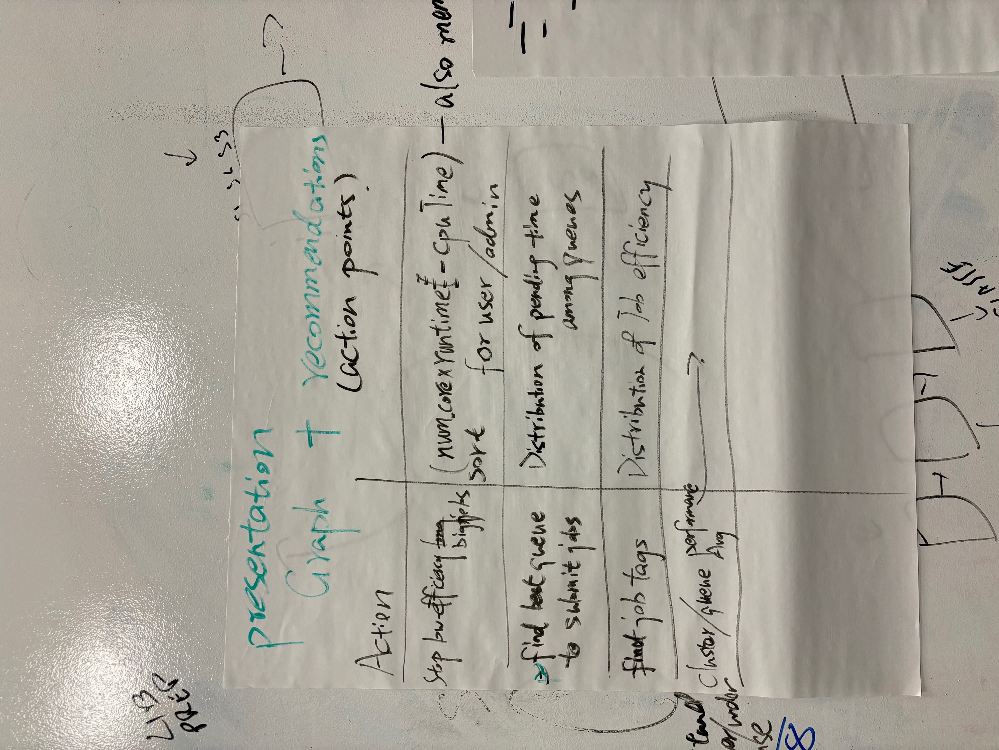

I attended my first hackathon this past week at St. Jude Children’s Research Hospital. The goal of the St. Jude KIDS24 (Knowledge in Data Science) BioHackathon is to collaborative on a coding-intensive project that addresses a problem proposed by the research community. I was grateful to receive a full travel award to attend in-person, though virtual participation is also encouraged for those who cannot travel. I worked with three talented participants over three days on our project titled “Optimizing High-Performance Computing (HPC) Resource Allocation Through Statistical Analysis”.
Day 1

After introductions, my team began learning about HPCs and brainstorming metrics to measure HPC efficiency. The dataset contained 6 million HPC jobs from 2024 with variables, such as username, number of processors, job queue, submission time, start & end time, maximum memory usage, requested memory usage, and more. We categorized the jobs based on this paper (“Scalable System Scheduling for HPC and Big Data” 2017):
run time: short, medium, long, very long
failed vs. successfully completed
parallelism vs. non-parallelism
Based on the information we had for each job, we defined two metrics to quantify efficient HPC usage:
We defined memory efficiency as the maximum memory used divided by the total memory requested. The total memory requested takes into account all of the processors.
We defined CPU utilization as CPU time used divided by the total run time. The total run time also takes into account all of the processors.
Our next goal was to perform exploratory data analysis (EDA) on the dataset, which was when the challenges began. The data were stored in a MongoDB database, but our team lead had to spend a while debugging versioning and hosting issues before we could access it on the virtual machine (VM) created for our team. The bigger challenge was that those of us working on EDA had not used databases before, so we spent some time learning about them. We had proposed converting a subset of the database entries into a CSV file, but simple operations on the CSV file quickly used up all the shared memory on the VM.
Day 2

At the beginning of Day 2, we narrowed down our goals for the project. I worked with the dataset to visualize and quantify associations between variables of interest and efficient usage of the HPC. In order to do this, I used Python to interface with the MongoDB database. The element-wise division that crashed the VM when using a CSV file was calculated in seconds. This efficiency opened up many more possible analyses for the project. Through this project, I gained a deep appreciation for databases and want to continue learning about their various uses. In parallel, one of my teammates built a realtime website to show current usage of the HPC in terms of submitted jobs and resources available on each queue/node. Another teammate worked on aggregating the jobs in 15-minute intervals. We hoped to use these aggregated results to predict wait time for an individual job with regard to current usage of the HPC. Before wrapping up for the day, we walked through our results and discussed challenges. There were many unforeseen challenges including:
Jobs with memory utilization larger than 1: Theoretically, all jobs that use more memory than requested should fail. However, there can be special cases in which jobs use more memory than requested only for a few seconds, and then dip back down under the threshold of memory requested. These jobs can continue running to completion, but they do slow down the queue and slow down the run time of jobs that are already running because they hog the resources and slow down the node.
Most metrics were highly right-skewed: The majority of jobs were within a small range of time, memory, number of processors, and other metrics. But, there were some jobs that ran much longer, with much more memory, and/or many more processors than the vast majority. Using a log-transformation helped us visualize and model these metrics.
Some jobs have negative pending time: One variable we analyzed was pending time, which is the difference between the submission time and the start time of a job. We found that some of these values were actually negative, later realizing this was due to users cancelling jobs before they started.
We had the opportunity to tour the St. Jude campus, as well as the HPC facility where the equipment is stored!
Day 3
For the first half of the day, we refined our visualizations, model, and realtime website to create a story for our final presentation. Our analyses informed what results to incorporate into the final draft of the website. During the final hours of the hackathon, I created a written report of our results and we collaboratively created a slide deck for our final presentation. The presentations were very casual. Other participants and researchers from St. Jude walked around each team’s station to ask questions about the projects. I enjoyed my experience and learned a lot during the process. My teammate will finish developing the website and continue these analyses to serve St. Jude’s HPC users.
We found that submitting jobs on the weekend or during non-business hours reduced wait time significantly. This is likely unsurprising to HPC users, but it was interesting to confirm!
In addition to expanding my knowledge of data structures and efficient usage of high-performance computing, I had the chance to connect with several biostatisticians and computational biologists at St. Jude and from other institutions. The students and faculty at the hackathon were kind and welcoming, and my teammates were very encouraging throughout the process. I also explored Memphis during the evenings, with highlights being the Bass Pro Shops at the Memphis Pyramid and the National Civil Rights Museum. For students on the fence about participating in a hackathon, I would encourage you to try it out! Your project may not be groundbreaking, but it is an opportunity to learn during a very focused period of time.
If you found this blog post helpful and would like to support my work, feel free to buy me a coffee.